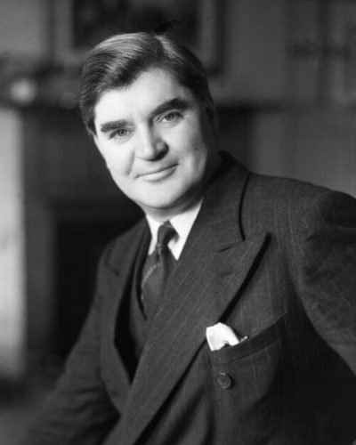

Ideologies / Left
What is Democratic Socialism?
Democratic Socialism is a political ideology in the Left family. Bevan saw modern politics as a contest between poverty, property and democracy, and held that an elected parliament is the tool by which the many can bring private economic power under public control. The dominant sectors of the economy should be publicly owned and planned, with a smaller private sector left around them. Services such as health care should be provided collectively and free at the point of need, as the National Health Service he founded was. He rejected both unregulated capitalism and one party communism.
Public ownership of the main levers of the economy, won and kept through parliament.
Defined from: Aneurin Bevan, In Place of Fear (1952)
See how close you are to Democratic Socialism Dare a friend to answer as one

.jpg){kind=link}
Where Democratic Socialism stands on 13 axes
Each axis runs from 0 to 100. A score of 50 is the middle. On a classic compass it sits in the Libertarian Left quadrant.
| Axis | Position | Score | In words |
|---|---|---|---|
| EconomyMarket to Planned | 70 | Strongly Planned | |
| OwnershipPrivate to Collective | 75 | Strongly Collective | |
| RightsLiberty to Security | 30 | Strongly Liberty | |
| GovernmentDemocracy to Autocracy | 5 | Very strongly Democracy | |
| StructureDecentralised to Centralised | 65 | Leans Centralised | |
| NationInternationalist to Nationalist | 35 | Leans Internationalist | |
| ImmigrationMulticulturalist to Assimilationist | 30 | Strongly Multiculturalist | |
| ValuesProgressive to Traditional | 25 | Strongly Progressive | |
| TechnologyAccelerationist to Precautionary | 30 | Strongly Accelerationist | |
| EnvironmentIndustrialist to Environmentalist | 35 | Leans Industrialist | |
| ReligionSecular to Religious | 15 | Very strongly Secular | |
| MilitaryPacifist to Militarist | 35 | Leans Pacifist | |
| TradeFree Trade to Protectionist | 50 | Balanced |
Ideologies closest to Democratic Socialism
- Eurocommunism93% alike
- Market Socialism92% alike
- Social Democracy89% alike
- Fabianism89% alike
- Austromarxism88% alike
Its opposite on this map is Kokutai Thought, at 32%.
Parties near Democratic Socialism
- Social Democratic Workers' Party of AustriaAustria. The Linz Programme (1926)90% alike
- Social Democratic Party of 1875Germany. Gotha Programme (1875)89% alike
- Fabian Society of 1889United Kingdom. Fabian Essays in Socialism (1889)89% alike
- Socialist Party of AmericaUnited States. Socialist Party Platform (1912)88% alike
Common questions
What is Democratic Socialism?
Democratic Socialism is a political ideology in the Left family. Bevan saw modern politics as a contest between poverty, property and democracy, and held that an elected parliament is the tool by which the many can bring private economic power under public control. The dominant sectors of the economy should be publicly owned and planned, with a smaller private sector left around them. Services such as health care should be provided collectively and free at the point of need, as the National Health Service he founded was. He rejected both unregulated capitalism and one party communism.
What does Democratic Socialism believe?
In one line: Public ownership of the main levers of the economy, won and kept through parliament. Its strongest positions are Democracy, Secular, Collective. Bevan saw modern politics as a contest between poverty, property and democracy, and held that an elected parliament is the tool by which the many can bring private economic power under public control. The dominant sectors of the economy should be publicly owned and planned, with a smaller private sector left around them. Services such as health care should be provided collectively and free at the point of need, as the National Health Service he founded was. He rejected both unregulated capitalism and one party communism.
Who founded Democratic Socialism?
Democratic Socialism is defined here from In Place of Fear (1952) by Aneurin Bevan. The thinker most tied to it is Aneurin Bevan (1897 to 1960).
Is Democratic Socialism left wing or right wing?
On a classic two axis compass Democratic Socialism falls in the Libertarian Left quadrant, which means the economic left and the libertarian side. Left and right hide a lot, though, which is why EthosScales scores it on thirteen separate axes.
How is Democratic Socialism different from Eurocommunism?
They are close: 93% alike. The biggest gaps are on Structure, where Democratic Socialism scores 65 and Eurocommunism scores 55, and Religion, where Democratic Socialism scores 15 and Eurocommunism scores 5. On each axis, 0 is one end and 100 is the other.
Think this is wrong? Suggest a correction. The scores are editorial estimates.